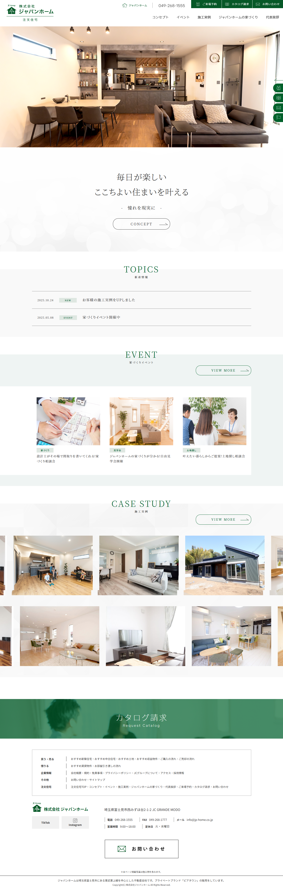
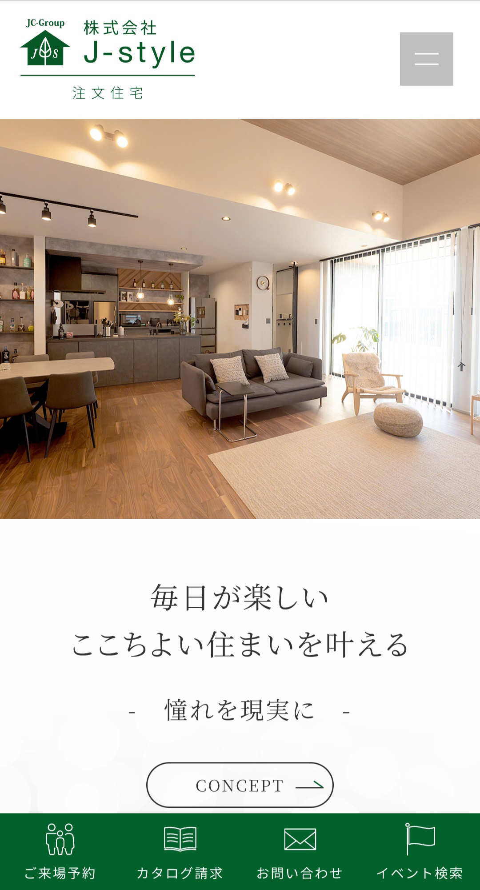
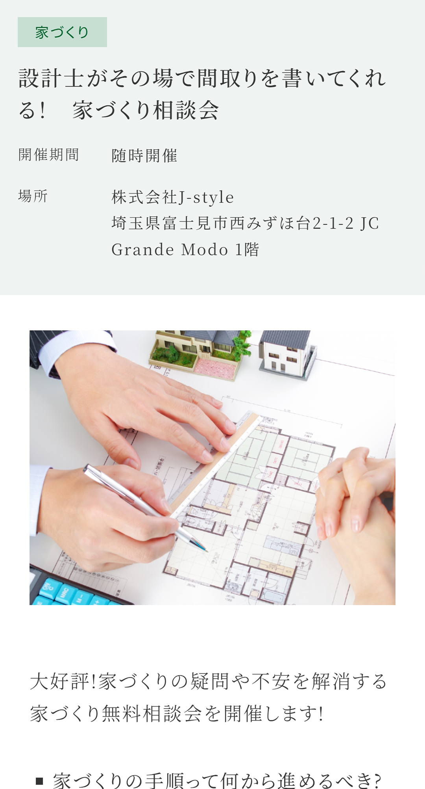
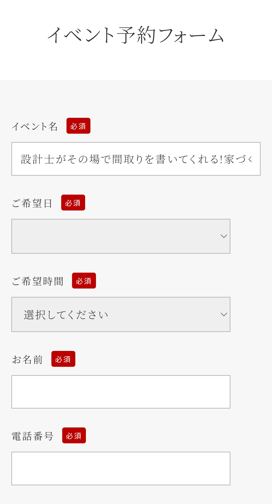

株式会社 J-style 注文住宅
- Category
- 注文住宅WEBページ
- URL
- https://js.jc-group.jp/chumon/
- Year
- 2025年
- Project
- WEBサイト新規
- Part
- 画面設計 / UIデザイン / フロントエンド実装
- Tool
- Photoshop / Illustrator / Dreamweaver / HTML / CSS
注文住宅事業に注力するため、既存サイトから独立した専用サイトを制作。
イベント情報や施工実例を掲載し、ご来店予約やお問い合わせを増やすことが目的。




背景・課題
既存のJ-style不動産サイトでは、売買・賃貸・注文住宅の3サービスを一つのサイトで展開していた。情報量が多く、ユーザーは目的の情報にたどり着きにくかった。
注文住宅事業を強化するため、注文住宅に特化した専用サイトを新規に制作。イベント情報や施工実例を掲載し、ご来店予約やお問い合わせを増やしたい。
制作フロー
情報設計
注文住宅サービスの情報整理と、
ユーザー導線の再構築。
ワイヤーフレーム
サービス内容の優先順位を明確化し、
ページ構造を設計。
デザイン設計
注文住宅のブランドイメージに沿った
配色・UI設計を実施。
実装
レスポンシブ対応と表示速度を
考慮して構築。
意識したこと
情報の優先順位整理
イベント情報や施工実例を優先的に掲載し、ユーザーが迷わずお問い合わせやご来店予約に進める導線を設計。
テンプレート化
施工実例・イベントを共通フォーマット化し、統一感と拡張性を確保。
共通パーツ設計
header・footerを共通化し、更新効率を向上。
レスポンシブ設計
情報量が多くても崩れない構造を意識。
成果
- 注文住宅サービス導線を整理し、サイト理解度を向上
- テンプレート化により更新工数を削減
- 公開後、問い合わせ増加に貢献
ふりかえり・改善点
注文住宅専用サイトでは、営業担当と共に情報設計を行い、イベント情報や施工実例から来店予約やお問い合わせへスムーズにたどり着ける導線を設計いたしました。
導線の整理により、ユーザーが迷わず目的に到達できる構造を作ることができました。
一方で、公開後のユーザー行動データを十分に分析できなかった点は課題として残っております。
今後は、改善施策の効果検証に加え、SNSからの導線も含めた設計を行い、予約やお問い合わせの向上につなげてまいりたいと考えております。